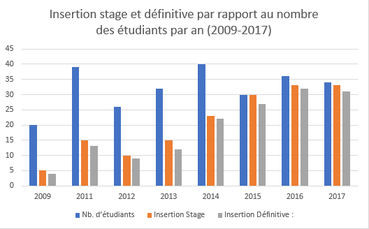
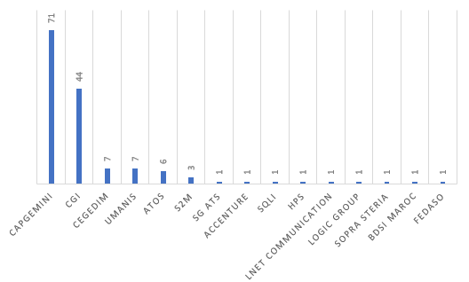

Le Master «Qualité du Logiciel», créé en 2007 orienté vers l'insertion professionelle dans les multinationales, permet d’offrir aux étudiants une formation approfondie et des méthodes de travail de très haut niveau dans le domaine de la qualité du logiciel.
le master Qualité de Logiciels s’intéresse à:
- Former et spécialiser des étudiants sur les systèmes informatiques, plus précisément le développement logiciel ;
- Doter les étudiants de compétences et de savoir faire dans les domaines d’ingénierie d’entreprises, l’intégration des systèmes clients - serveurs ainsi que les systèmes et applications répartis

Condition d'access
Proédure de sélection
- Etude de dossier
- Test écrit
- Entretien oral
Dossier de candidature
- Demande manuscrite adressée à Monsieur le Doyen
- Attestation de réussite en cycle licence
- Copie du projet de fin d’études
- Relevé de notes
- Copie de la carte d’identité Nationale
- 4 enveloppes timbrées portant l’adresse du candidat
- 4 photos
- Lettres de recommandation
Profil Demandé :
Un Mqliste est un futur ingénieur d'étude maitrisant les bonnes pratiques du développement, qui doit posséder les qualités suivantes :
- Bagage informatique sur les différents aspect informatiques
- Capacité d'écoute
- Maitrise de soi
- Esprit d'équipe
- Motivation
- ...
Les modules constituent pour les apprenants un pré requis scientifique important et pertinent pour une intégration réussie dans le monde professionnel, la formation permet aux étudiants d’acquérir une ouverture culturelle et une confiance en eux même (réalisations de mini projets et des projets de fin d’études, stages dans des entreprises, préparations des exposés………).
La formation MQL s'intersse principalement aux besoins des entreprises, cette formation est déroulée en 4 semestres, 2 par an, dont chacun avec 6 modules , le 4ème semestre est déstiné pour un stage pré-embauche dans des multinationales actives en développement offshore. Voir plus...
Présentons MQL en chiffres :
-Nous avons passsé de 20% d'insertion en stage pré-embauche en 2009 (5 sur 20) à 100% en 2015 (30 sur 30) , dont +90% ont signé des contrats CDI
-Entre 2015 et 2019, CAPGEMINI, de ces deux sièges RABAT et CASABLANCA, est notre premier partenaire en nombre d'étudiants intégrés avec 71 stagiaires, suivie de CGI (Fes, Rabat et Casablanca ) avec 44 MQListes
- Sur un total d'effectif de 160 étudiants, 147 ont réussi à décrocher leurs contrats CDI avec un taux d'insertion de 92% (2015-2019):

WE ARE A FAMILY! MQL est une famille !
MQL : une famille, un style de vie :